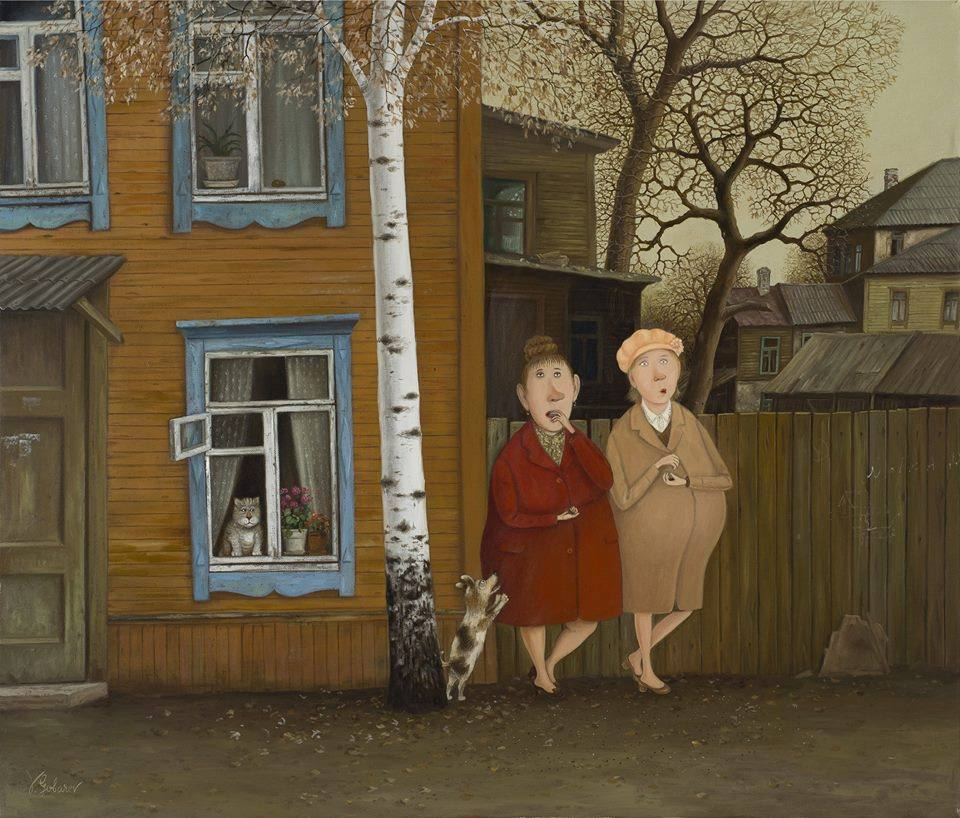
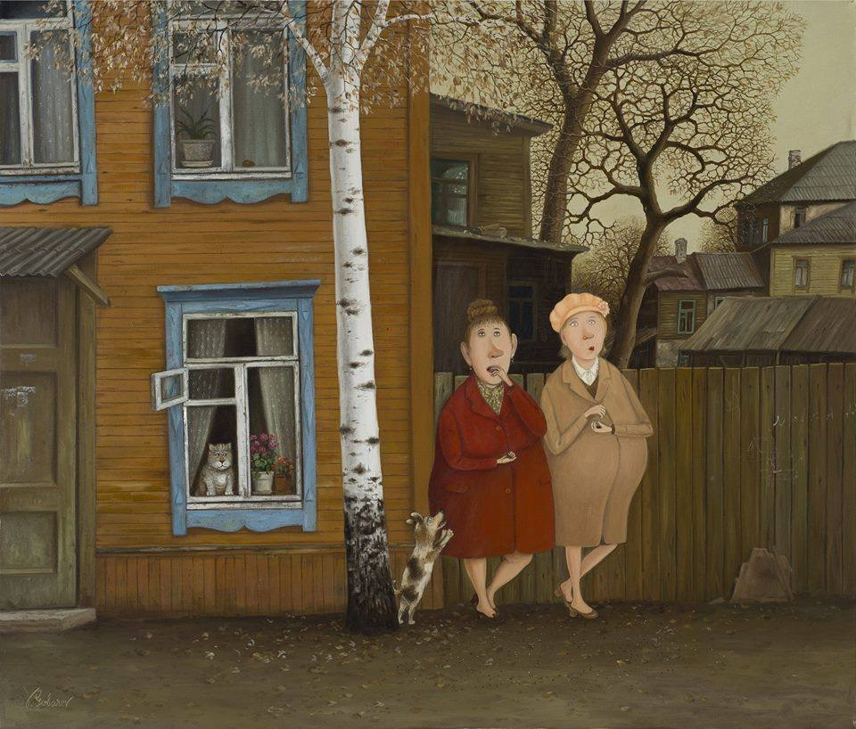

Картины Валентина Губарева
 

Художник-примитивист из Минска Валентин Губарев не гонится за славой и просто делает то, что любит. Его творчество безумно популярно за рубежом, но почти незнакомо его соотечественникам. В середине 90-х годов в его бытовые зарисовки влюбились французы и заключили с художником контракт на 16 лет. Картины, которые, казалось бы, должны быть понятны только нам, носителям «скромного обаяния неразвитого социализма», понравились европейской публике, и начались выставки в Швейцарии, Германии, Великобритании и других странах.